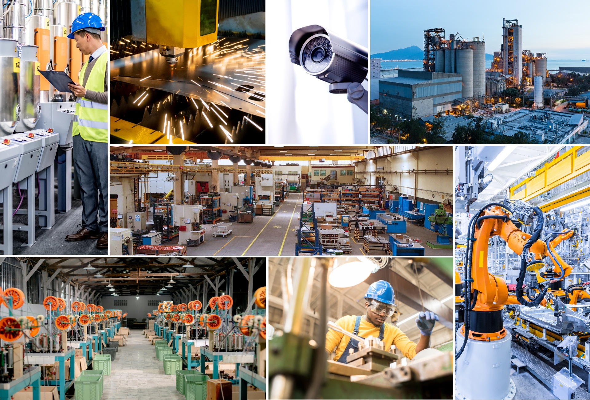

01 / WORKER SAFETY
작업자의 안전
보호구 착용, 제한 구역 접근, 작업자와 장비의 위험한 근접 상황을 확인하는 영상분석 시나리오를 구성합니다.
- 보호구 착용 확인
- 위험 구역·동선 모니터링
Manufacturing & Logistics
생산라인부터 물류창고와 하역장까지.
현장의 영상과 시스템 신호를 연결해, 더 안전하고 효율적인 운영을 설계합니다.

카메라가 담은 장면을 운영의 단서로.
제조·물류 현장의 대표적인 활용 시나리오를 소개합니다.
보호구 착용, 제한 구역 접근, 작업자와 장비의 위험한 근접 상황을 확인하는 영상분석 시나리오를 구성합니다.
라인의 정지나 장비의 유휴 상태 같은 변화를 살펴보고, 영상 이벤트와 시스템 알림을 연결하는 방안을 설계합니다.
검수가 필요한 장면과 주요 자산의 이동을 기록·확인할 수 있도록, 공정 특성에 맞는 분석 범위를 검토합니다.
창고, 입출고 구역과 하역장의 움직임을 파악하고, 영상과 운영 데이터를 함께 살펴볼 수 있는 환경을 제안합니다.
위 내용은 활용 시나리오입니다. 실제 지원 기능과 적용 범위는 도입 제품, 카메라 환경 및 현장 검증 결과에 따라 협의합니다.
고객의 과제와 제품의 대응 기능을 한눈에.
안전, 품질, 물류의 세 가지 주요 과제를 살펴보세요.
안전보호구·안전수칙 관리
보호구 착용 여부와 지게차 주변의 위험 행동을 모든 작업 구역에서 지속적으로 확인하기 어렵습니다.
보호구 착용, 낙상, 장비 주변의 위험 상황을 영상으로 분석하고, 감지한 이벤트를 실시간 알림으로 전달합니다.
안전 이벤트를 빠르게 확인반복 가능한 검수·이력 관리
수작업 검수는 일관된 기준을 유지하기 어렵고, 놓친 결함이 출하 이후의 비용으로 이어질 수 있습니다.
제품 결함과 오염·적재 이상을 분석하고, 검수 장면과 이벤트 이력을 남겨 반복적인 확인과 추적을 돕습니다.
검수의 일관성과 추적성 확보자산 이동·입출고 흐름 관리
재고의 위치와 이동을 수기로 기록하면 분실, 입출고 지연, 적재 손상을 제때 파악하기 어렵습니다.
카메라 간 추적, 차량 번호판 인식과 적재 상태 확인으로 자산 이동과 야드의 입출고 흐름을 파악합니다.
재고 이동과 물류 흐름 가시화이 과제를 해결할 플랫폼, 왜 Vaidio일까요?
선택하는 이유 살펴보기다양한 AI 분석, 기존 시스템 연동, 유연한 구축.
도입을 검토할 때 살펴볼 네 가지 제품 강점입니다.
다양한 객체와 상황을 학습한 모델로 안전, 품질, 운영에 필요한 영상분석을 제공합니다.
다양한 현장 상황을 분석기존 카메라와 영상관리 시스템을 연결합니다. Milestone, Genetec, Axis 등의 연동을 지원합니다.
기존 설비 투자를 활용보안 정책과 인프라 환경에 따라 엣지, 온프레미스, 클라우드 또는 하이브리드 구축을 검토할 수 있습니다.
환경에 맞는 배포 방식 선택Kubernetes 기반 구조로 플로팅 라이선스, 워크로드 최적화와 멀티테넌트 서비스 포털을 제공합니다.
대규모 운영과 확장에 대응Vaidio 공식 제조 솔루션 소개 자료 기준입니다. 수치는 제조사 설명이며, 지원 기능·호환성·성능은 제품 버전과 현장 환경에 따라 확인합니다. 즉시 ROI나 특정 정확도를 보장하는 의미는 아닙니다.
제조사 제품 자료 확인Vaidio의 영상분석 기능을 고객 환경에 맞게 연결하도록,
철통은 제품 선정, 시스템 연동과 운영 범위를 함께 검토합니다.
카메라, 네트워크, 영상관리 시스템과 운영 환경을 살펴봅니다.
우선 해결할 과제를 정하고, 적합한 제품과 API·SDK 연동 방식을 검토합니다.
이벤트 알림, 관제 흐름과 시스템 유지보수의 연결 범위를 협의합니다.
LET’S BUILD TOGETHER
제조·물류 현장의 고민과 도입 환경을 알려주세요.